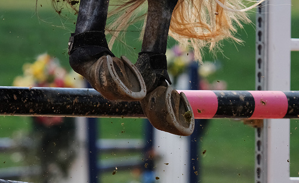

Show jumping is one of the most highly recognized equestrian sports in the country, alongside Thoroughbred racing. This competition takes place in an enclosed arena, with several jumps set up in a carefully measured and laid out course. Before the competition, the jumps are measured to ensure specific distances between them, forcing the rider to decide how many strides his or her horse will need to take between each jump. The course is then studied by the rider, and they must complete each jump in the correct order. Missing a jump or not going in order will result in immediate disqualification.
Once the competition has begun, the riders will be called in order of their number. Only one horse and rider team goes at a time. A bell will sound, and the rider will have 45 seconds - 1 minute to begin the course. The timer starts when they make their first jump. As the team progresses through the course, they will be timed, and any poles knocked over will count as 4 points against their score. The player with the fastest time and fewest poles downed (or lowest score depending on the rules being used) wins the competition.
To see a great example of a show jumping course, check out the video below of a Kentucky Rolex Show Jumping Competitor.